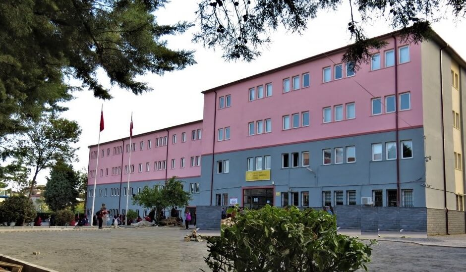

Özgeşmiş
Hakan Efe Tüysüz
Hakkımda
Ben Hakan Efe Tüysüz 7 Haziran 2005 tarihinde İstanbulda doğdum. İlkokul eğitimimi İstanbulda tamamladıktan sonra çeşitli nedenlerden dolayı Kocaeli ilinin Gebze ilçesinde ortaokul hayatıma devam ettim. Daha sonra Lise olarak Gebze Anadolu lisesinde başarılı eğitim hayatımı aynen sürdürdüm. Üniversite sınavı sonrası istediğim bölüm olan Bilgisayar Mühendisliğini kazandım . Şuan Sakarya Üniversitesi Bilgisayar Mühendisliği 1. sınıf öğrencisi olarak hayatıma devam ediyorum ve kendimi eksik gördüğüm alanlarda geliştirmek işin elimden geleni yapıyorum.
Eğitim
-
Gebze Anadolu Lisesi
Mezuniyet Yılı : 16 / 06 / 2023
 -
Sakarya Üniversitesi
Bilgisayar Mühendisliği 1. Sınıf

Beceriler
- Liderlik
- Yaratıcılık
- Organizasyon Becerisi
- Takım Oyuncusu olabilmek
- Kendini Geliştirme
- Orta Düzey C++
- Orta Düzey C#
- Orta Düzey Phyton
- İyi Düzey HTML
- İyi Düzey CSS
- Orta Düzey JavaScript
- Başlangıç Düzey PHP
İletişim
Adres : Kemalpaşa 6. Cadde No. 1 Serdivan/SakaryaTelefon : 0544 731 79 41
E-posta: hakanefetuysuz@gmail.com